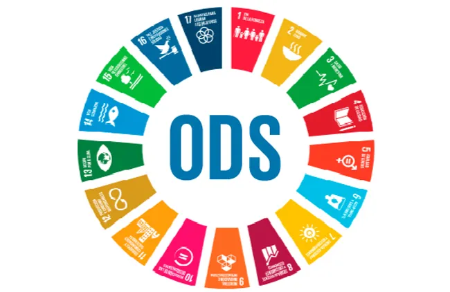

Conoce los 17 objetivos adoptados por las Naciones Unidas para erradicar la pobreza, proteger el planeta y asegurar la prosperidad para todos.
Los Objetivos de Desarrollo Sostenible (ODS) son una iniciativa global creada por la ONU con metas concretas para lograr un futuro más justo, equitativo y sostenible para todas las personas y el planeta.
Erradicar la pobreza en todas sus formas en todo el mundo.
Garantizar una educación inclusiva, equitativa y de calidad para todos.
Adoptar medidas urgentes para combatir el cambio climático y sus efectos.